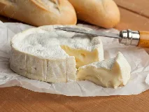
Camembertwiki-fr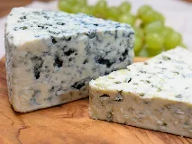
Roquefortwiki-fr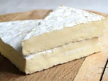
Brie de Meauxwiki-fr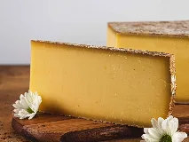
Comtéwiki-fr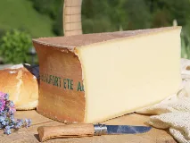
Beaufortwiki-fr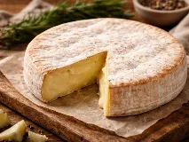
Reblochonwiki-fr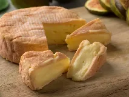
Munsterwiki-fr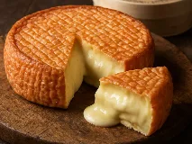
Époisseswiki-fr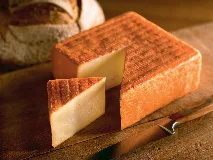
Maroilleswiki-fr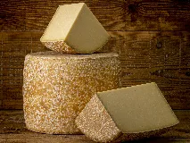
Cantalwiki-fr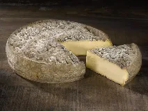
Saint-Nectairewiki-fr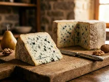
Bleu d'Auvergnewiki-fr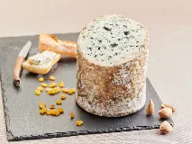
Fourme d'Ambertwiki-fr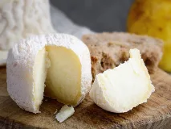
Crottin de Chavignolwiki-fr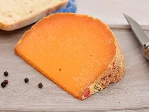
Mimolettewiki-fr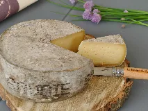
Tomme de Savoiewiki-fr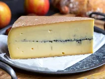
Morbierwiki-fr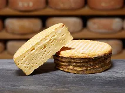
Livarotwiki-fr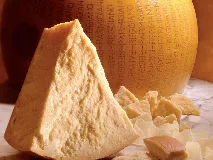
Parmigiano Reggianowiki-fr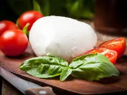
Mozzarellawiki-fr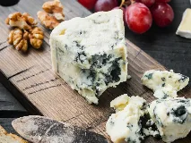
Gorgonzolawiki-fr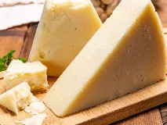
Pecorino romanowiki-fr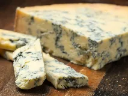
Stiltonwiki-fr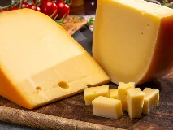
Goudawiki-fr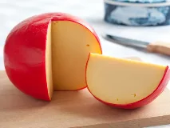
Édamwiki-fr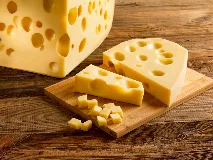
Emmentalwiki-fr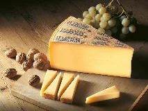
Gruyèrewiki-fr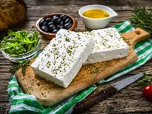
Fetawiki-fr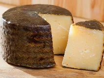
Manchegowiki-fr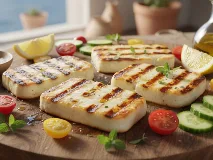
Halloumiwiki-fr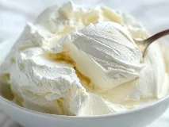
Mascarponewiki-fr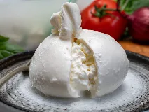
Burratawiki-fr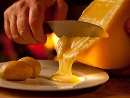
Raclettewiki-fr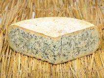
Bleu de Gexwiki-fr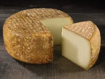
Ossau-Iratywiki-fr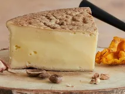
Vacherinwiki-fr